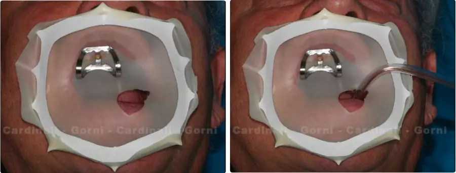

نسخه استخراجشده؛ ترجمه یا تأیید علمی انجام نشده است. وضعیت: captured
خانمی ۵۲ ساله برای درمان ریشهی مولر اول بالا آمده است. تا ورق رابردم را میبیند میگوید: «دفعهی قبل زیر این پلاستیک حس خفگی داشتم؛ بدون آن کار کنید.» تنفس بینیاش طبیعی است. کنار گذاشتن رابردم تنها راه است؟

رایجترین دلیلی که دندانپزشکان برای رابردم نگذاشتن میآورند «بیمار دوست ندارد» است. ولی بیشتر بیماران رابردم را خوب میپذیرند و پذیرش وقتی بالاست که دندانپزشک پیش از گذاشتن مزیتهایش را توضیح دهد. بیماری که دلیل را بداند، بهندرت مخالفت میکند.
کلاستروفوبیا مانع جدی رابردم است، ولی اغلب مدیریتپذیر است:
چند وضعیت گذاشتن رابردم را سخت یا ناممکن میکند:
در یک بررسی حدود ۳٫۷٪ بیماران به لاتکس حساسیت داشتند.
نکتهی طلایی: صادق باش؛ رابردم هم عارضه دارد: شکستن کلمپ، آسیب کلمپ به مینای دمینرالیزهی سرویکال، لبپریدگی لبهی نازک ونیر و آسیب مخاط هنگام گذاشتن یا برداشتن. انتخاب درست کلمپ و کار دقیق اینها را کم میکند.